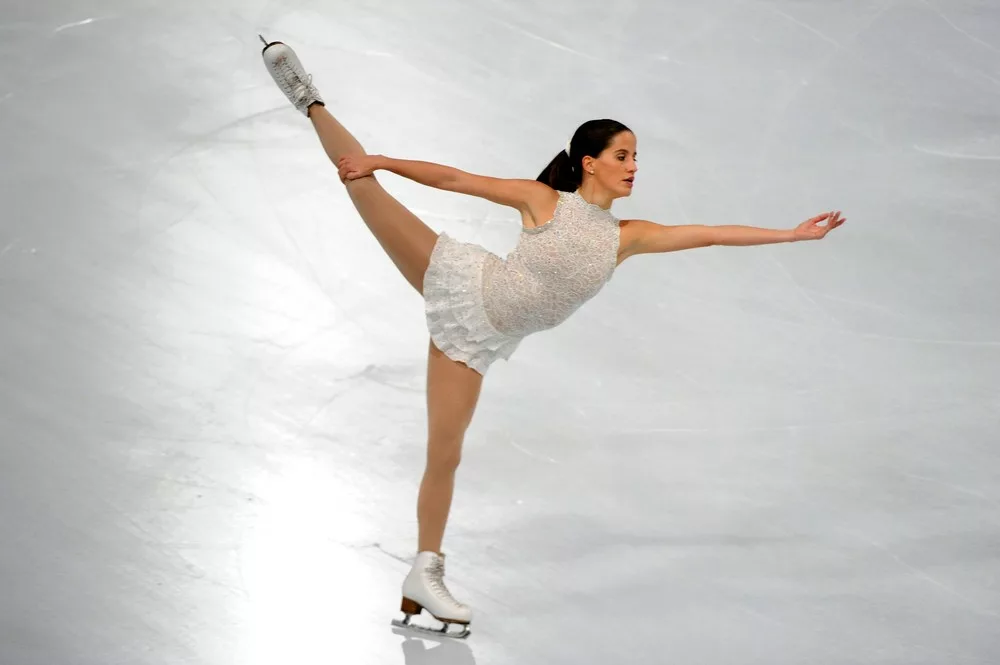
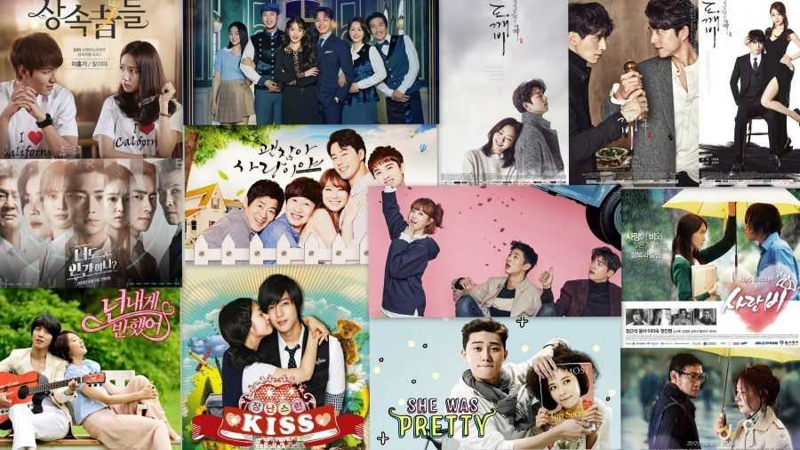

Videojuegos
Juego en muchas plataformas de juegos como Repo, DBD, Fortnite y otros que me llaman la atención de aprender a jugar.

Disfruto del patinaje sobre hielo artístico, me encantaba practicar los movimientos y ver competiciones para aprender nuevos estilos.
Veo muchas series, especialmente K-Dramas. Me gusta seguir las historias de principio a fin y disfrutar de la cultura coreana en general me gusta sobre la cultura asiatica.
Juego en muchas plataformas de juegos como Repo, DBD, Fortnite y otros que me llaman la atención de aprender a jugar.